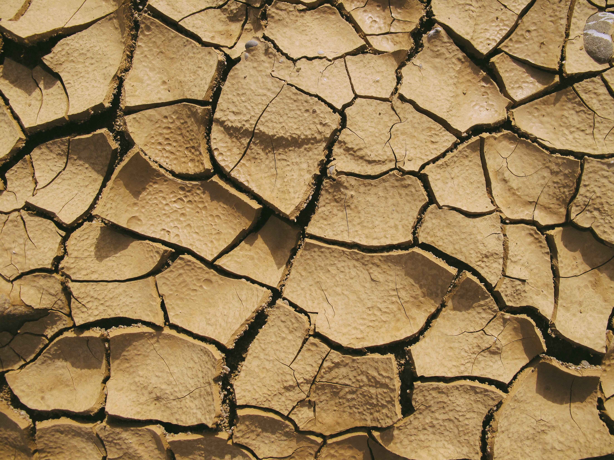

Why is it important?
Rainwater harvesting is important for several reasons, particularly in the context of climate change and water conservation. Here's why it plays a crucial role in both mitigating climate impacts and saving water:
- Climate Resilience:
- Mitigating Flooding:As climate change leads to more intense and erratic rainfall patterns, rainwater harvesting helps mitigate flooding by capturing excess rainwater that would otherwise contribute to stormwater runoff.
- Water Conservation:
- Reducing Strain on Freshwater Resources:Rainwater harvesting reduces the demand for conventional freshwater sources like rivers, lakes, and underground aquifers, which are often over-exploited. This helps protect these resources from depletion and pollution.
- Sustainable Water Use:It promotes sustainable and responsible water use by capturing rainwater for non-potable purposes, such as irrigation, flushing toilets, and washing, thus conserving treated drinking water for consumption.
- Energy Savings:
- Reduced Energy Use:Treating and distributing water to households requires a significant amount of energy. By using harvested rainwater for various non-potable purposes, energy consumption is reduced, resulting in lower carbon emissions and cost savings.
- Resilience Against Drought:
- Mitigating Water Scarcity:Rainwater harvesting provides an alternative water source during droughts when conventional water supplies are often strained. This can help maintain essential water services even in water-scarce periods.
- Reduced Erosion and Pollution:
- Reduced Erosion and Pollution:Collecting and storing rainwater reduces the velocity of stormwater runoff, which helps prevent erosion and sediment transport in urban areas, benefiting local ecosystems.
- Less Pollution:Stormwater runoff often carries pollutants from streets and surfaces into natural water bodies. Rainwater harvesting reduces this pollution by capturing and storing runoff, improving water quality in local waterways.
- Local Self-Sufficiency:
- Reduced Dependency:Rainwater harvesting systems make communities less reliant on centralized water supply systems, which can be vulnerable to climate-related disruptions or other crises. It enhances local self-sufficiency.
- Economic Benefits:
- Cost Savings: Using harvested rainwater can lead to significant cost savings on water bills, making it an economically viable solution for both households and businesses.
- Sustainable Development:
- Sustainable Practices:Rainwater harvesting is a sustainable water management practice that aligns with principles of environmental conservation and sustainable development.
- Education and Awareness:
- Promoting Environmental Awareness:Rainwater harvesting systems can serve as educational tools to raise awareness about the importance of water conservation and climate change adaptation in communities and schools.
- Legislative and Regulatory Support:
- Incentives: Some regions offer incentives or rebates to encourage rainwater harvesting, reinforcing its importance in water conservation efforts.
In summary, rainwater harvesting is a versatile and effective solution that contributes to climate change resilience by managing stormwater, conserves water resources, reduces energy consumption, and helps communities become more self-sufficient. Its importance is growing in the face of climate-related challenges and increased pressure on freshwater sources, making it an essential tool for a sustainable and resilient future
